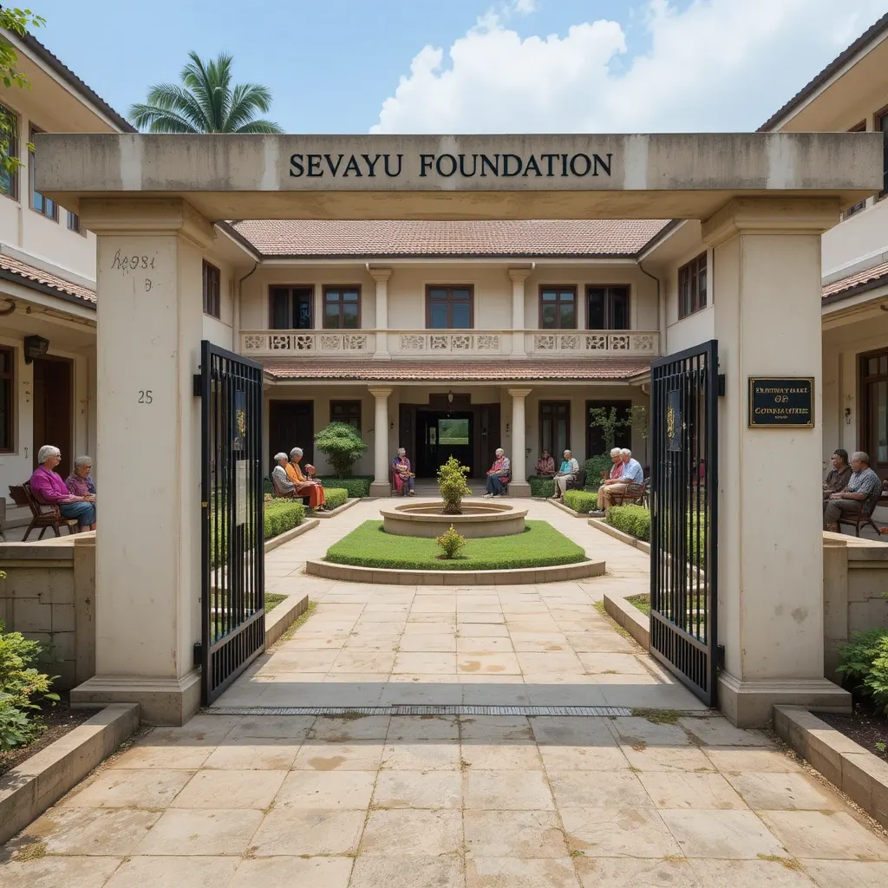

01
Old age home
Sevayu Foundation facilitates a serene and loving Home for the Aged and Retired in the sacred town of Vrindavan Brajdham, offering elderly individuals a peaceful and spiritually enriched environment. Surrounded by the divine atmosphere of Lord Krishna’s land, the foundation provides not just physical care, but also emotional and spiritual support. Residents are offered comfortable accommodations, medical attention, and the opportunity to engage in daily prayers, bhajans, and satsangs, helping them live their golden years with dignity, devotion, and inner peace.
Give to this seva